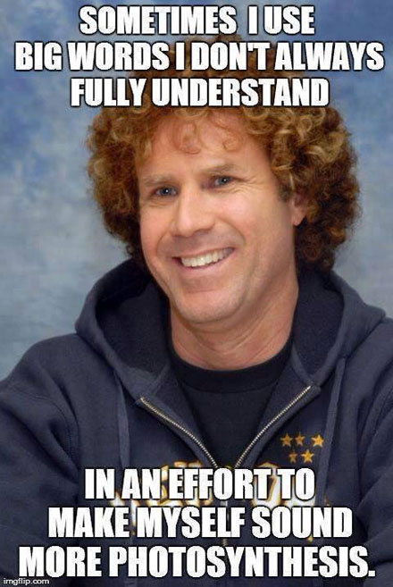

Vocabulary and Word Skills
Lesson plans and learning activities
| Word Study Resources | |
| Etymology | Words with Multiple Meanings |
| Prefixes and Suffixes | Spelling |
| Vocabulary | Word Roots |
| Words at Play | |
10 Sites and Apps for SAT Vocabulary Review
A list of useful resources from "Free Technology for Teachers."
The 10-Minute Vocabulary Lesson
10 vocabulary activities that can be completed in 10 minutes or less. Designed for middle school, adaptable.
12 Ways to Learn Vocabulary With The New York Times
These strategies will work with any quality online news source, including your hometown newspaper.
12 Words and Phrases That Originated in the Funny Pages
Looking for a nontraditional vocabulary/etymology lesson? Have students add to this list from more recent comics.
abcteach.com
Among the generous links at this site are elementary/primary-level Word Searches, Crossword Puzzles, Shape Books, and ABC activities, all ready to print and use!
Affect or effect?
A thorough explanation for middle schoolers and above, including text, a 4-minute audio file, and a downloadable chapter from her book, which requires Adobe Reader for access.
Affect versus Effect
This downloadable YouTube video (4:17) emphasizes effect as a noun; affect as a verb but also explores effect as a verb and affect as a noun. Includes advertising at the end.
Antonym Bingo
The students will demonstrate knowledge of antonyms after an introduction done by the teacher. After the introduction, the students will play antonym bingo to reinforce the skill.
Antonyms: Super Why Bingo
This interactive game supports practice with antonyms. The audio is a helpful component, but students understand the directions; it is not essential.
 Anyone vs any one, none vs no one
Anyone vs any one, none vs no one
Explanation and downloadable poster for these frequently confused words.
Building a Better Vocabulary
This page includes a wealth of resources, including Latin root words, prefixes and suffixes. Scroll down to find related sites and online quizzes appropriate for secondary students.
Calliope, Muse of Eloquence
An interactive, Web-based series of lessons. Students explore words from Latin and Greek mythology. Worksheets available at the site encourage critical reading and help students avoid random clicking.
The Case Against Good and Bad
This short video from TED-ED (4:53) encourages students to use more precise language. Includes a post-viewing assessment and follow-up activities.
The Clarifying Routine: Elaborating Vocabulary Instruction
This strategy is designed for LD students and will work well with all students.
Doing it Differently: Tips for Teaching Vocabulary
In this blog a teacher explains a procedure that has worked well with her students. The procedure is based on Marzano's research.
Emotions - Feelings Word Vocabulary
This graphic presents words related to emotions and organized by how strong the feeling is. Example: glad, cheerful, ecstatic. Printable.
The Evolution of Languages
A beautiful site exploring etymology, regional dialects, cognates.
Expansions: An Online Book of Vocabulary Games
Six activities for your next vocabulary lesson.
Finding New Ways to Say Something
Students select the right synonym to complete a sentence, match words to their thesaurus entries, and practice alphabetizing skills. These online activities are designed for adult learners and will work with middle school and above.
Free Rice
Online vocabulary practice that adjusts to a student's skill level. For each correct response, the sponsors donate rice to fight world hunger.
A Fun Way to Make Vocabulary Stick
This move-around-the-room activity uses vocab words and sticky notes.
Other vocabulary and word skills pages | 1 | 2 | 3 | 4 |
